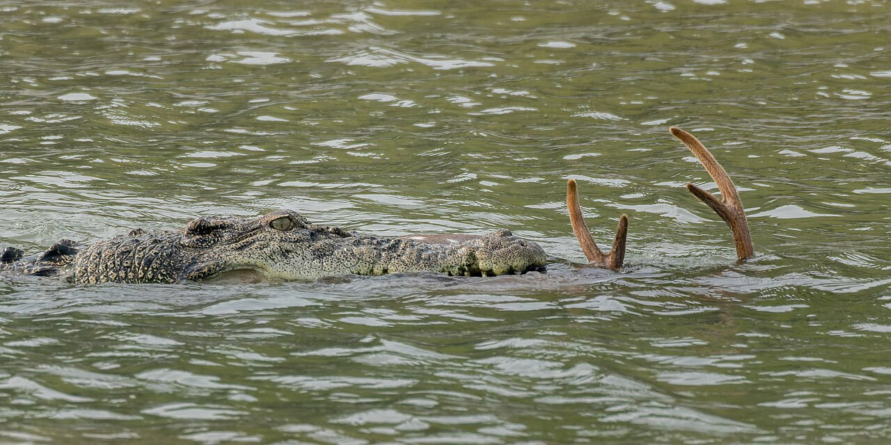

When Nature Speaks,
Technology Listens
National Parks, Biodiversity & Wildlife Sanctuaries
Wildlife observation and early warning across West Bengal, India
Asian Elephant
Normal Daily Routine:
Peacefully eating grass and leaves, slowly flapping ears to stay cool, gentle rumbles
Warning Signs to Watch for:
Sudden freezing, distressed trumpeting, unusual herd gathering, or a marked change in movement
Red Panda
Normal Daily Routine:
Foraging in forest canopy and moving quietly through the eastern Himalayan forests
Warning Signs to Watch for:
Unusual restlessness, reduced movement, or an abrupt change in feeding behaviour

Saltwater Crocodile
Normal Daily Routine:
Basking on Sundarbans mudbanks or resting quietly in tidal waterways
Warning Signs to Watch for:
Sudden thrashing, unusual movement onto banks, or repeated vocalisation
Hornbills & Migratory Waterbirds
Normal Daily Routine:
Regular calls and seasonal movement through West Bengal forest and wetland habitats
Warning Signs to Watch for:
Sudden silence, disoriented flight, or an unusual change in flocking and nesting behaviour
Royal Bengal Tiger
Normal Daily Routine:
Resting during the day and moving through forest or mangrove habitat at cooler hours
Warning Signs to Watch for:
Repeated pacing, persistent vocalisation, or a sudden change in movement and feeding
Indian One-horned Rhinoceros
Normal Daily Routine:
Grazing in grassland and using wetlands in protected areas of northern West Bengal
Warning Signs to Watch for:
Unusual agitation, repeated movement, or a sudden change in feeding and habitat use